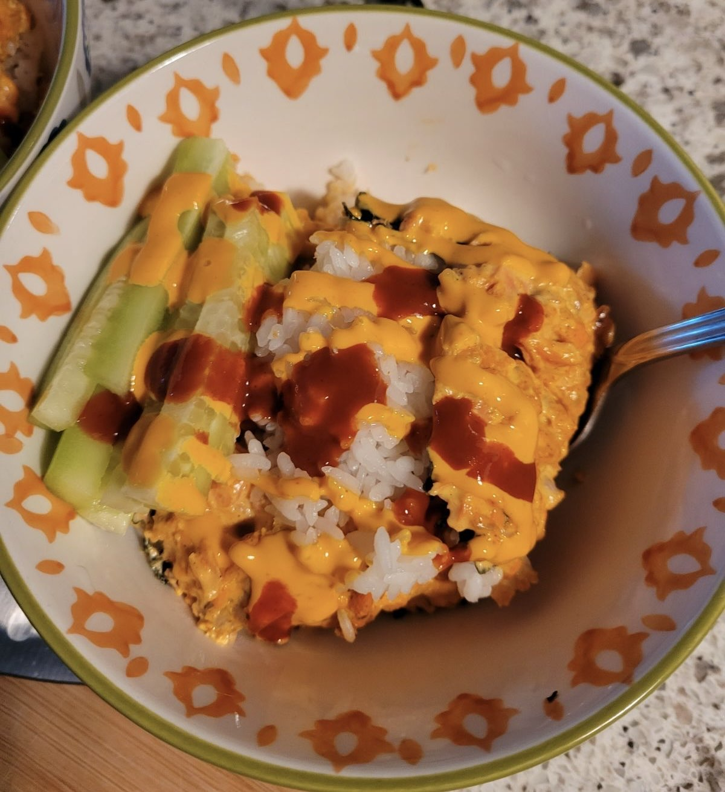

Recipe - Salmon Bake
Sushi Bake (Serves 3-5)
Ingredients:
- 1/2 lb salmon, seasoned to taste
- 1/2 lb imitation crab, shredded
- 3 oz cream cheese
- 1/4 cup Japanese mayo
- 1 tbsp sriracha
- 2-3 cups cooked rice
- 2 tbsp rice vinegar
- Furikake or shredded seaweed (optional)
Instructions:
- Season salmon (garlic powder, salt, pepper) and air fry at 400°F for 9 minutes. Shred the salmon and mix with imitation crab.
- Add cream cheese, mayo, and sriracha to the salmon mixture. Set aside.
- Mix cooked rice with rice vinegar and spread evenly in an oven-safe dish.
- Top rice with furikake or shredded seaweed, then spread the salmon mixture over it.
- Bake at 380°F for 10 minutes (broil for 2-3 minutes if desired).
- Serve with seaweed wraps, cucumbers, or avocado. Enjoy!
